Stately State Machines With Ragel

RubyConf 2015
Ian Duggan
Goals for This Talk
Convince you that Ragel is worth trying.
Give you some intuition about how it works.
Show you how to setup a basic parser.
Hello
My name is Ian Duggan

I Play Hockey
Several times a week.

I Play Guitar
And banjo. And mandolin. And ukulele. Poorly. I have a fiddle that's gathering dust.

Sometimes I Fly

I Love My Cats
They Are Goofballs

But Very Furry
And Dopey

And Relaxed
And Fun
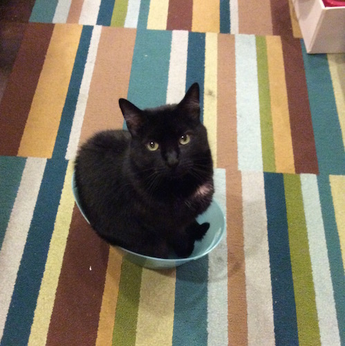
Software! FTW!
I'm a software dude. I code things. I code the internets and the googles. I'm also a recovering technology entrepreneur. I've been in and out of startup institutions my entire life.
Current Status

We're Hiring (of course)
Lots of Ruby.

We're Hiring (of course)
Lots of Go.

I'm a Rubyist, since 1.6
I've been using Ruby casually since the 1.6 days, and professionally for more than a decade.
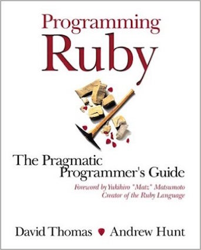
Today is About Ragel

Ragel Is Really Cool
If you don't have it in your bat-belt yet, you need to add it. Today!
Ruby projects using Ragel
- Mongrel, Unicorn, Puma
- Whitequark
- RedCloth
- Hpricot
- Gherkin
https://github.com/whitequark/parser/blob/master/lib/parser/lexer.rl
What Does Ragel Look Like?
%%{
action dgt { printf("DGT: %c\n", fc); }
action dec { printf("DEC: .\n"); }
action exp { printf("EXP: %c\n", fc); }
action exp_sign { printf("SGN: %c\n", fc); }
action number { /*NUMBER*/ }
number = (
[0-9]+ $dgt ( '.' @dec [0-9]+ $dgt )?
( [eE] ( [+\-] $exp_sign )? [0-9]+ $exp )?
) %number;
main := ( number '\n' )*;
}%%
But Regular Expressions are easy!
Regular expressions consist of constants and operator symbols that denote sets of strings and operations over these sets, respectively. (from Wikipedia)
/a/ # match a
/abc/ # match "a", then "b", then "c" (concatenation)
/a|b/ # match "a" or "b" (alteration)
/gr(a|e)y/ # match "gr", then "a" or "e", then "y" (grouping)
/a?/ # match zero or one "a"
/a*/ # match zero or more "a"
/a+/ # match one or more "a"
/a{18}/ # match "a" 18 times
/a{2,}/ # match "a" 2 or more times
/a{2,10}/ # match "a" between 2 and 10 more times
Ruby has great tools for regular expressions
You can get by with them. You can especially get by with them in Ruby which draws its heritage from Perl, Sed, and Awk which made wonderful use of regexps.
@dot = @dot.gsub(/^.*->.*$/) do |line|
line.gsub(/label = ".*"/) do |labels|
labels.gsub(/\b\d+/) { |num| ASCII_MAP[num] || num }
end
end
Irregular Expressions
zarro boogs found
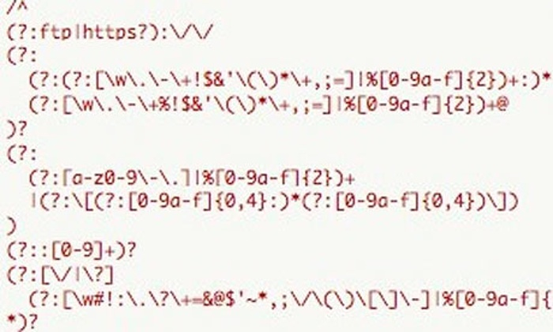
Sometimes You Want More Control
I posit that this might be some sort of automaton.
Finite Automata
Have states and transitions.
Change state based on sequence of inputs.
DFA can be in only one state at a time.
NFA can be in more than one state at a time.
Equivalence of Regular Expressions, NFAs, and DFAs
It is possible to convert freely between regular expressions, deterministic finite automata, and nondeterministic finite automata. Given one, we can convert it to any of the other forms.
http://faculty.ycp.edu/~dhovemey/fall2008/cs340/notes/lecture3.html
These Are All State Machines
State machines are an important tool in computer programming, and Ragel is a wonderful tool for creating them.
State machines are everywhere
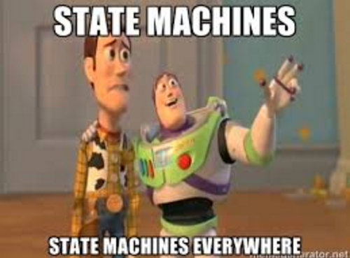
They're in your stoplight
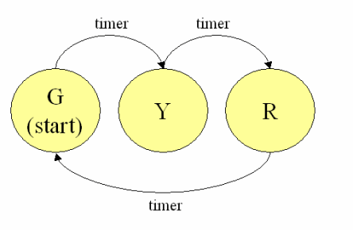
They run your CPU

There are examples everywhere
- watch with timer
- vending machine
- traffic light
- bar code scanner
- gas pumps
- number classification
The Cat's Meow?
State machines are great for many reasons. They are simple to understand, and there has been a great deal of research around finite automata and state machines. With the right approach they can also produce code that is faster, easier to maintain, and more correct and thus more secure.
Still Not Convinced?
Rather than me trying to convince you that they're useful, let's just talk about them for a bit and see where we end up.
Let's go over some vocabulary
Start state
This is the initial state of a machine.
(S0)
Accept state
In this state, the machine is said to have "accepted" the input.
(double circle)
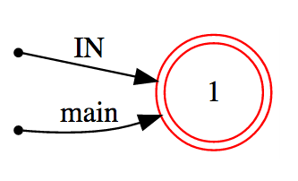
Transition
Upon consuming a single character, the machine can move from one state to another.
(labelled arrow)

Epsilon Transition
Allows an automaton to change its state spontaneously, i.e. without consuming an input symbol.

Simple Machines
'a', 'a'*, 'a'+

More Complex
'hello'*
Zero or more hellos.

What's the Big Deal?
These just look like regular expressions.
What is Ragel Exactly?
Ragel is a finite-state machine compiler with output support for C, C++, C#, Objective-C, D, Java, OCaml, Go, and Ruby source code. It supports the generation of table or control flow driven state machines from regular expressions and/or state charts and can also build lexical analysers via the longest-match method. Ragel specifically targets text parsing and input validation.
State Machine Generation
Ragel supports the generation of table or control flow driven state machines from regular expressions and/or state charts and can also build lexical analysers via the longest-match method. A unique feature of Ragel is that user actions can be associated with arbitrary state machine transitions using operators that are integrated into the regular expressions. Ragel also supports visualization of the generated machine via graphviz.
How Do You Pronounce It?
- RAY-gull?
- RAY-jul?
- RAH-gull?
- RAH-jul?
Let's get it from the horse's mouth
Adrian D. Thurston Created Ragel
https://www.mail-archive.com/ragel-users@complang.org/msg00344.html
Re: [ragel-users] pronounciation
Adrian Thurston Sat, 10 Apr 2010 09:02:10 -0700
Hi Landon,
I usually say something like "rah-ghel." I had no
phonetic basis for it when I picked it. I just took my nickname
"Age" and wrapped it in the R and L of regular languages. I've
since learned that it means "man" in Arabic.
Adrian
Landon Cox wrote:
> Hi Adrian and others,
>
> Simple question: What is the pronunciation of "Ragel"?
>
> Is it "Ray-Gull" or "Rag-El" (like dish rag) or "Rage-El" ?
>
> Thanks,
>
> Landon
Well, darn. I've been pronouncing it wrong for quite some time!
Ragel is a DSL for creating state machines
It is espcially useful for parsing protocols and data formats. (HTTP, XML, JSON, CSS, etc...)
Let's look at the DSL
General Structure of a Ragel File
- Mostly in the host language
- has a .rl extension (simple.rl)
- %% is used for inline statements
- %%{ is used for multiline statements }%%
%%{
machine foobar;
main := 'foobar';
}%%
%%write init;
%%write exec;
Naming a Machine
With named machines, you can spread a machine's statements across several files or include common sections.
machine phone_parser;
Machine Definition
You define a machine using the equals operator.
<name> = <expression>;
This allows it to be referenced later.
Machine Instantiation
This causes the actual generation of the referenced set of states.
<name> := <expression>;
Each instantiation generates a distinct set of states.
File Inclusion and Import
You can include and import definitions from other files.
include FsmName "inputfile.rl";
import "inputfile.h";
These can help you keep things organized. See the manual for the specific semantics of each.
Whitespace
Any amount of whitespace can separate tokens.
Literals
Literals are contained in quotes, regexp slashes, or brackets for groupings.
"" # string
'' # string
// # regexp
[] # union
Escape Characters
\0 null
\a
\b backspace
\t tab
\n newline
\v vtab
\f formfeed
\r carriage return
You can escape the end of a line with a \ (as in shell scripting)
Host Language Code
Braces are used to delimit host language code
%%{
{ puts "I am ruby" }
}%%
Numbers
Integers and hexadecimals can be used to refer to numbers.
[+-]?[0-9]+ # integers (-23432, +23423, 23423)
0x[0-9A-fa-f] # hexadecimal (0xABD)
Keywords
access
action
alphtype
getkey
write
machine
include
Concatenation Literal
Match on a sequence of letters.
%%{
machine simple;
main := 'simple';
}%%

Union Expression
%%{
machine union_range;
union := [abc];
union_range := [acm-z];
}%%

Zero Length Machines
%%{
machine zero_length_machines;
single := '';
double := "";
bracket := [];
}%%

Numerical Literal
Produces a two-state machine with one transition on the given value, which can be given in decimal or hexadecimal.
%%{
machine numerical_literal;
main := 42;
}%%
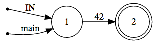
Regular Expression
%%{
machine regexp2;
main := /ab*[c-z].*[123]/;
}%%
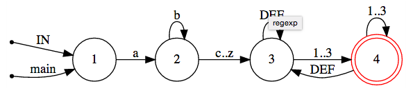
Range Expression
Matches any character between 'a' and 'z' inclusive.
%%{
machine range;
main := 'a'..'z';
}%%

Variable Name
Inserts the machine referenced by this name.
%%{
machine variable_name;
secret_code = [0-9]{2};
main := secret_code;
}%%
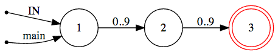
Builtin Machines
any – Any character in the alphabet.
ascii – Ascii characters. 0..127
extend – Ascii extended characters.
alpha – Alphabetic characters. [A-Za-z]
digit - Digits. [0-9]
alnum – Alpha numerics. [0-9A-Za-z]
lower – Lowercase characters. [a-z]
upper – Uppercase characters. [A-Z]
xdigit - Hexadecimal digits. [0-9A-Fa-f]
cntrl – Control characters. 0..31
graph – Graphical characters. [!-~]
print – Printable characters. [ -~]
punct – Punctuation.
space - Whitespace. [\t\v\f\n\r ]
zlen - Zero length string. ""
empty - Empty set. Matches nothing. ^any
Building Blocks
We have simple machines now.
Like levers, wedges, wheels, and pulleys.
But let's not stop here.
From simple machines we can make complex machines.
Simple

Complex
Isn't She Cute?
Composition
Ragel's DSL allows you to take these simple machines, and through some basic operators, combine those into bigger machines, and then combine those into BIGGER machines.
Compositional Operators
expr | expr - union
expr & expr - intersection
expr - expr - difference
expr -- expr - strong difference
expr . expr - concatenation
expr* - kleene star
expr+ - one or more repetion
expr? - optional
expr{n} - exactly N copies of expr
expr{n,} - Zero to N copies of expr
expr{,m} - N or more copies of expr
expr{n,m} - N to M copies of expr
!expr - negation
^expr - character-level negation
Union
Matches any string in machine one or machine two
expr | expr
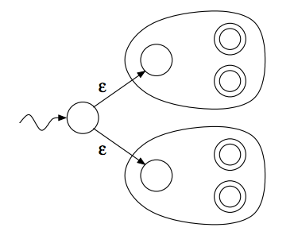
Union Example
%%{
machine union2;
# Hex digits, decimal digits, or identifiers
main := digit+ | alpha alnum*;
}%%
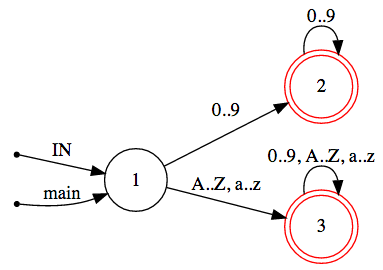
Intersection
Matches any string that is in both machine one and two.
expr & expr
Intersection Example
%%{
machine intersection;
main := /[^\n][^\n][^\n][^\n]\n/* & (/[a-z][a-z]*/ | [ \n])**;
}%%

Difference
Matches strings in machine one but not in machine two
expr - expr
Difference Example
%%{
machine difference;
# Subtract keywords from identifiers.
main := /[a-z][a-z]*/ - ( 'for' | 'int' );
}%%

Strong Difference
Matches any string of the first machine that does not have any string of the second machine as a substring.
expr -- expr
Equivalent to:
expr - ( any* expr any* )
Strong Difference Example
Used to excluded CRLF from a sequence.
%%{
machine strong_difference;
crlf = '\r\n';
main := [a-z]+ ':' ( any* -- crlf ) crlf;
}%%
The DEF transition is taken if no other transition can be taken.

Concatenation
Matches all the strings in machine one followed by all the strings in machine two.
expr . expr
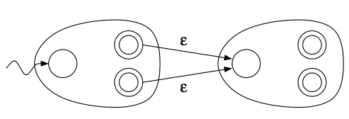
Concatenation Example
%%{
machine concatenation;
#concatenation
main := [a-z]+ . /ba[rz]/;
}%%
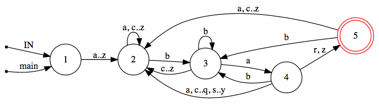
Kleene Star
Match zero or more repetitions of the machine it is applied to.
expr*
Kleene Star Example
%%{
machine kleene_star;
# Match any number of lines with only lowercase letters.
main := /[a-z]*\n/*;
}%%

One or More Repetion
Produces the concatenation of the machine with the kleene star of itself. The result will match one or more repetitions of the machine.
expr+
Equivalent to:
expr . expr*
Optional
expr?
Equivlaent to:
expr | ''
Optional Example
%%{
machine optional;
# Match integers or floats.
main := digit+ ('.' digit+)?;
}%%
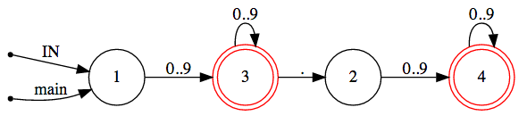
Repetition
expr{n} - exactly N copies of expr
expr{n,} - Zero to N copies of expr
expr{,m} - N or more copies of expr
expr{n,m} - N to M copies of expr
Negation
Matches any string not matched by the given machine.
!expr
Equivalent to:
any* - expr
Negation Example
%%{
machine negation;
# Accept anything but a string beginning with a digit.
main := !( digit any* );
}%%
Character- Level Negation
^expr
Equivalent to:
any - expr
State Machine Minimization
- Reduces the number of states through optimization
- Merges equivalent states
- On by default (can be disabled with -n)
User Actions
Composition is definitely cool and useful. But on top of that, Ragel gives you embedded actions. This is where you take all the composition and really make it sing, on key.
Embedding Actions
action <action_name> {
# host code here
count += 1
}
Actions can be referenced by name or embedded inline.
Transitions
Transitions come in four classes, and actions can be attached to any of them.
Entering Transition
> operator
expr > action_name
expr >{ puts "entering" }
Embeds an action into all transitions leaving the "start state"
Finishing Transition
@ operator
expr @ action_name
expr @{ puts "finishing" }
Embeds an action into all transitions going into a "final state"
All Transition
$ operator
expr $ action_name
expr ${ puts "transitioned" }
Embeds an action into all transitions, regardless of type (useful for debugging).
Leaving Transition
% operator
expr % action_name
expr %{ puts "leaving" }
Embeds an action into all transitions leaving the machine from a "final state"
Embedding Operators Can Get Fancy
See the manual for more information on these.
- To-State Actions
- From-State Actions
- EOF Actions
- Global Error Actions (for error recovery)
- Local Error Actions (for error recovery)
Nondeterminism
One of the problems you will run into is when the trailing match of one machine is the same as the leading match of the next machine. In these cases, the state will be stuck in the first machine and never transition to the next machine.
Nonedeterminism Example
The \n in ws will preven the final \n from matching.
ws = [\n\t ];
line = word $first ( ws word $tail )* ’\n’;
lines = line*;
The solution here is simple: exclude the newline character from the ws expression.
ws = [\t ];
line = word $first ( ws word $tail )* ’\n’;
lines = line*;
Ambiguity Problems
Here's an incorrect way to parse C language comments:
comment = ’/*’ ( any @comm )* ’*/’;
main := comment ’ ’;
The any will prevent the trailing */ from ever matching.
This Works But It's Ugly
comment = ’/*’ ( ( any @comm )* - ( any* ’*/’ any* ) ) ’*/’;
We have to carefully exclude things to get it to match.
This Is Getting Complicated!
But there's a solution.
Ragel lets you embed priorities into transitions to deal with ambiguity.
Setting Priorities Manually
expr > int – Sets starting transitions to have priority int.
expr @ int – Sets transitions that go into a final state to have priority int.
expr $ int – Sets all transitions to have priority int.
expr % int – Sets leaving transitions to have priority int.
Namespacing Priorities
When machines are combined, you can get odd interactions if you don't namespace the priorities.
expr > (name, int) – Starting transitions.
expr @ (name, int) – Finishing transitions (into a final state).
expr $ (name, int) – All transitions.
expr % (name, int) – Leaving transitions.
Guarded Operations
Thinking in priorities is hard.
Fortunately Ragel provides some better mechanisms for us to use.
These are called "guarded concatenations"
Finish-Guarded Concatenation
A higher priority is then embedded into the transitions of the second machine that enter into a final state.
comment = ’/*’ ( any @comm )* :>> ’*/’;
This is much simpler to visualize and reason about.
Entry-Guarded Concatenation
A higher priority is given to the second machine.
expr :> expr
# Leave the catch-all machine on the first character of FIN.
main := any* :> 'FIN';
Equivalent to:
expr $(unique_name,0) . expr >(unique_name,1)
Left-Guarded Concatenation
The left hand machine has a higher priority.
expr <: expr
For stripping leading space:
main := ( ’ ’* >start %fin ) <: ( ’ ’ $ws | [a-z] $alpha )*;
Longest-Match Kleene Star
This has a higher priority for staying in the machine rather than wrapping around again.
expr**
# Repeat tokens, but make sure to get the longest match.
Main := (
lower ( lower | digit )* %A | digit+ %B |
''
)**;
Scanners
Scanners are a common thing to build with Ragel, so it has special support for them.
<machine_name> := |*
pattern1 => action1;
pattern2 => action2;
...
*|;
Scanner Example
Tokenizing the contents of a header field.
%%{
word = [a-z]+;
head_name = 'Header';
header := |*
word;
' ';
'\n' => { fret; };
*|;
main := ( head_name ':' @{ fcall header; } )*;
}%%
Protocol Parsing
Ragel is well suited for protocol parsing.
Mapping an RFC onto a Ragel specification is pretty straight-forward.
Puma has a good example of this (heritage is the original mongrel parser by Zed Shaw)
https://github.com/puma/puma/blob/master/ext/puma_http11/http11_parser_common.rl
State Charts
Ragel allows you to specify states and transitions directly if you desire extreme customization.
This is like programming in the "assembly" of Ragel.
There are a few new operators for this.
State Chart Example
Parsing XML CDATA.
action bchar { buff( fpc ); }
action bbrack1 { buff( "]" ); }
action bbrack2 { buff( "]]" ); }
CDATA_body =
start: (
']' -> one |
(any-']') @bchar ->start
),
one: (
']' -> two |
[^\]] @bbrack1 @bchar ->start
),
two: (
'>' -> final |
']' @bbrack1 -> two |
[^>\]] @bbrack2 @bchar ->start
);
Parser Modularization
action return { fret; }
action call_date { fcall date; }
action call_name { fcall name; }
# A parser for date strings.
date := [0-9][0-9] '/'
[0-9][0-9] '/'
[0-9][0-9][0-9][0-9] '\n' @return;
# A parser for name strings.
name := ( [a-zA-Z]+ | ' ' )** '\n' @return;
# The main parser.
headers =
( 'from' | 'to' ) ':' @call_name |
( 'departed' | 'arrived' ) ':' @call_date;
main := headers*;
Parsing Recursive Structures
The general trick is to store some context about where you are in your
recursive structure, say in a stack called @nestings, and push/pop to
it as appropriate. When it comes time to call fret, you can examine your
@nestings and steer the parser as deemed appropriate.
Implementing Lookahead
This is possible. The trick here is to match deeper than you need, then use fhold to walk the parser back a few characters.
Ragel Internals
Ragel uses several variables for state. You can twiddle them in actions.
* data - the buffer where you should store the data
* p - start index in data where Ragel is matching
* pe - end index of data (Ragel should ignore anything past this)
* ts - in a scanner, token start
* te - in a scanner, token end
* act - in a scanner, last matched action
Those are the major ones. See the manual for more details.
Ragel Operation (roughly)
- Starts in state 0
- Feed it data, updating
pandpeas appropriate - Run the
%%execloop - Characters move it through a state
- It consumes
p -> pefromdata - If
csis>= first_final_state(final states are last) then you have “admitted” the string
Ragel Operation (scanners)
Scanners are a bit more involved, but not that much more.
- Use a stack to track states
- Use ts -> te to track where they are in a match
- Use the stack to backtrack when necessary
- Keep matching repeatedly until we are done
- Longest match wins
- It's useful to create helper methods (
emit,current_buffer,current_match(start, end))
Ragel String Extraction
To pull out the data you care about, while you are parsing, you will do something like this:
* >mark { puts "mark the beginning a pattern" ; @mark = @data[p] }
* %emit l{ puts "save the currently matched pattern" ; @things << data[@mark..pe] }
Host Languages
Several host languages are available.
host language:
-C The host language is C, C++, Obj-C or Obj-C++ (default)
-D The host language is D
-Z The host language is Go
-J The host language is Java
-R The host language is Ruby
-A The host language is C#
-O The host language is OCaml
Code Styles
Ragel uses your .rl code to compute the set of states and transitions. From that, it can generate code in a number of different styles.
code style: (C/D/Java/Ruby/C#/OCaml)
-T0 Table driven FSM (default)
code style: (C/D/Ruby/C#/OCaml)
-T1 Faster table driven FSM
-F0 Flat table driven FSM
-F1 Faster flat table-driven FSM
code style: (C/D/C#/OCaml)
-G0 Goto-driven FSM
-G1 Faster goto-driven FSM
code style: (C/D)
-G2 Really fast goto-driven FSM
-P<N> N-Way Split really fast goto-driven FSM
Code Styles Performance
Each of these has different visual organization and performance characteristics. In languages like C, this can boil down to heavily-optimized GOTO statements in a single while loop. It's fast and cpu-cache friendly.
Multi-Language
It's possible to have a single Ragel definition that uses import semantics to allow implementing the actions in different languages using the same parent Ragel file. See the http11 parser in puma for details (C and Java)
Ragel in C
It's also possible to prototype in Ruby, then convert it to a C module for super speed. Ragel supports several output formats so you can do this port rather easily.
Again, see mongrel or puma for ideas.
Ragel Directives - init
Initializes the data buffer and sets the current state:
%write init;
Ragel Directives - data
Writes out definitions of the state and transition data:
%%write data;
Ragel Directives - exec
Writes out the code that processes the data buffer using the state and transition data
%%write exec;
%%write data;
class << self
attr_accessor :_hello_key_offsets
private :_hello_key_offsets, :_hello_key_offsets=
end
self._hello_key_offsets = [
0, 0, 1, 2, 3, 4
]
class << self
attr_accessor :_hello_trans_keys
private :_hello_trans_keys, :_hello_trans_keys=
end
self._hello_trans_keys = [
101, 108, 108, 111, 104, 0
]
# LOTS MORE LIKE THIS
# ...
# ...
%%write init;
begin
p ||= 0
pe ||= data.length
cs = simple_start
top = 0
end
%%write exec;
begin
_klen, _trans, _keys = nil
_goto_level = 0
_resume = 10
_eof_trans = 15
_again = 20
_test_eof = 30
_out = 40
while true
_trigger_goto = false
if _goto_level <= 0
# LOTS MORE LIKE THIS
# ...
# ...
end
Installation
brew install ragel
Generating the Ruby
simple.rl -> simple.rb
ragel -R simple.rl -o simple.rb
Visualization
You can get a dotviz graph.
ragel -V simple.rl > simple.dot
dot -Tsvg simple.dot -o simple.svg
Calling From Ruby
To run on a single buffer of String data:
def ragel_parse(data)
data = data.unpack("c*")
eof = data.length
tokens = []
%% write init;
%% write exec;
puts tokens.inspect
end
Ragel Playground
I created a tool in Volt to do some basic visualization.
https://github.com/ijcd/ragel_playground
It's definitely a work in progress, but feel free to try it out.
Demos
- hello parser
- args parser
- args state chart
Talk to me, baby!
@ijcd
github.com/ijcd
https://github.com/ijcd/ragel_playground
Comments
# is used for single line comments